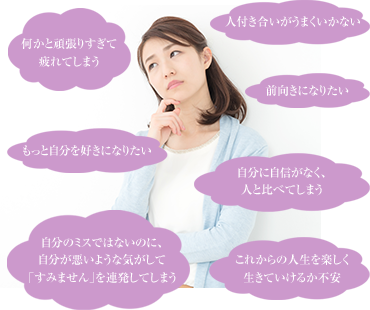
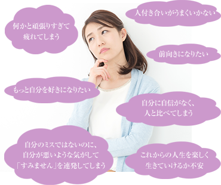

※LINE 登録後、セッションをご希望される方は
「セッション希望」と一言メッセージを入れてください。
 

インナーチャイルドとは
「傷ついた子供の心」のことです。
幼いころに受けた心の傷が
大人になっても大きな影響を
与え続けることもあるのです。
「三つ子の魂百まで」ということわざ通り、
人格は家庭や環境において
3歳までに80％が形成されると
いわれています。
誰でも思い出したくない
子供時代の記憶や体験を
持っているのではないでしょうか？
その経験がインナーチャイルドへ
つながってしまうのです。
生きづらさを感じている方にとって、
インナーチャイルドの存在を認めることが
人生を良くする第一歩になるです。
インナーチャイルドを癒やすには、
自分の心と向き合い、
深層心理を客観的に
理解していくことが大切です。
当セラピーでは継続的に心をケアしながら、
インナーチャイルドを癒やす
お手伝いをしていきます。
幼いころにできた
自分の小さな部屋から飛び出して、
ありのままの素敵なあなたを
取り戻しましょう。
傷ついたインナーチャイルドは、
あなたの普段の生活に
大きな影響を与えています。
インナーチャイルドを癒やすことで、
次のような変化が
インナーチャイルドを
癒やすことにはリスクもあります。
心の奥に留めているイヤな記憶や
感情と向き合わなくてはいけないため、
自分自身への負担が大きいのです。
心の防衛本能がそれらを
忘れさせていることもあるので、
無理に思い出すことは
その時の悲しい感情を
もう一度味わうことになりかねません。
また、インナーチャイルドを癒やした反動で
極端に行動が変わり、
周りの方に迷惑をかけてしまうこともあります。
無理や極端を避けることが大切です。
しかしながら
どのように実践すればよいかわからない
という人がほとんどでしょう。
そんなあなたには
少しずつインナーチャイルドを
癒すための知識や技術を身に着けた
専門のセラピストとのセッションを
おすすめします
※LINE 登録後、セッションをご希望される方は
「セッション希望」と一言メッセージを入れてください。
※対象年齢30歳以上の方
アメリカ最先端のセラピーメソッドで
あなたの心を癒します。
幼少期につくられた思い込みや刷り込み、
そして感情が現実を作ることに注目し
インナーチャイルドを癒やすことで
現在の生活の中での生きづらさを解消し、
ありのままの自分を手に入れる
お手伝いをしています。
あれから今までの自分を振り返り、親の期待に応えたいとずっと思っていたことや、私が親になった今子どもたちへかける言葉選びなどについて自然と考える時間を持つようになり、固まっていた思い？みたいなのが和らいでずいぶん気持ちが楽になっていることを実感しています。
・私自身かなりちぐはぐな話し方をしてしまいましたが否定をせず聴いてくれたこと。 ・知識に専門性があり気づきを得られたこと。特に内にある自分も母親も笑顔でいられるようには考えが一歩進めることができ私の段階に沿った答えを得られたと感じました。
どんどん涙が溢れてきて止まらなかったです。私も愛されていたんだなぁ、私も愛していいんだなぁと…不器用な両親に育てられてきて、私も同じように不器用に子供たちに接してきて…。何か亡くなった父のことも許せる気がしますし、母のことも許して愛を持って接して行きたいと思いました。 もちろん子供たちにも。
インナーチャイルドの癒し、りょうさんに導かれての癒しでは効果・リアリティを感じれました。 まだまだ凝り固まった私の心、固定観念を一つずつ剥がして本来の自分を生きたいと思いました。
小さなことからでも自分の心に問いかけ、【何が好き】を実践していきます。


※LINE 登録後、セッションをご希望される方は
「セッション希望」と一言メッセージを入れてください。
※対象年齢30歳以上の方